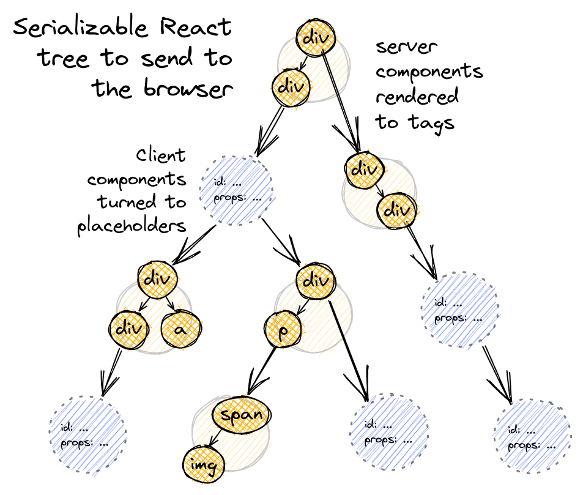
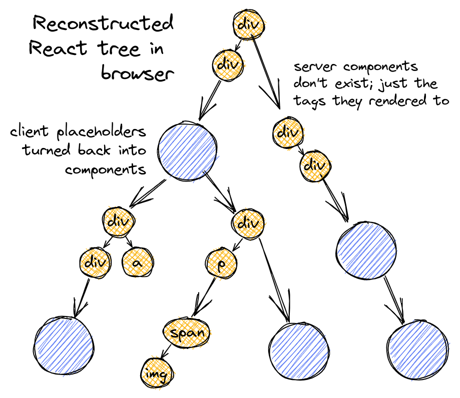

RSC
本文最后更新于：2023年12月4日 下午
推荐阅读：
React 新概念-服务器组件
How React server components work: an in-depth guide
引入零捆绑大小的 React 服务器组件
前言
在笔者刚了解到 RSC(React Service Component)的时候，笔者总是把他和 SSR(Service-Side Render)混为一谈，其实他们完全就是两个概念。
SSR 代表的是一种渲染方式，与之对应的是 CSR(Client-Side Render),SSR 是一种利于 SEC，加快首屏渲染减少白屏时间的解决方案，被称之为服务端渲染。
我在这篇文章中并不会提到相关内容，如果感兴趣可以去阅读彻底理解服务端渲染-SSR
本篇文章的重点，是 RSC
什么是 RSC
早在 2020 年年末，React 官方放出了一个演讲和一段演示，主要内容就是关于 RSC，一种零捆绑大小的 React 服务端组件，致力于解决现阶段的两个问题：
- 应用程序中日益增加的捆绑包大小
- 缓慢的网络请求
服务端组件和客户端组件的区别
你可以通过use service或者use client来告诉 React 你想用服务端组件还是客户端组件
1 | |
1 | |
当然在一个应用程序中你可以混用两种组件,就像这样：

但值得注意的是，你只能在服务器组件中调用服务器组件或者客户端组件，而客户端组件只能调用客户端组件不能调用服务器组件:
1 | |
等等，不是说客户端组件不能调用服务器端组件吗?那是怎么做到上面那张图中的树结构中把服务器端组件(orange)挂在客户端组件(blue)上的？
虽然说我们不能直接 import 服务器组件在客户端组件中，但是我们可以 props 传入的方法将暂时不知道是什么的 ReactNode 作为 props 传给到客户端组件中，而这些 ReactNode 也许就是服务器端组件：
1 | |
这样就实现了在外部的 service 组件中传入了一个客户端组件，而这个客户端组件下挂载了一个服务端组件，实现了上图的树形结构
RSC 是如何渲染的
简单的来说：当 React 想要渲染某个服务器组件的时候，会发送一个请求给服务器，携带着各种信息来确定所要渲染的组件及其属性，然后服务器会将这些组件序列化成 JSON 格式再返回给客户端，在客户端上再反序列化，最终呈现出来。
接下来我们近一步了解一下 RSC 渲染的生命周期
RSC 渲染的生命周期
注意：以下内容来源于这篇文章
我对其进行了一点自己的翻译，但感觉依旧晦涩难懂，如果不感兴趣可以直接跳过
1. 服务器收到渲染请求
在上面我们提到过客户端组件是没法引入服务端组件的，所以我们的 RSC 页面将始终以服务器端组件开头。根组件始终是服务器端组件。
当我们开始准备渲染时，我们将会发送特定的请求到特定的 url 上，服务器通过我们发送的请求，根据信息来确定要使用的服务器组件。
2. 服务器将根组件元素序列化为 JSON
这里的最终目标是将初始根服务器组件呈现为基本 html 标记和客户端组件“占位符”的树。然后，我们可以 JSON 化这棵树，将其发送到浏览器，浏览器可以对其进行反 JSON，用真实的客户端组件填充客户端占位符，并呈现最终结果。
还记得上面写到的一个<OuterServerComponent/>组件吗，如果我们要渲染这个服务端组件，是将其直接JSON.stringfy()吗？
差不多，但不完全是！回想一下其实 React 元素就是一个对象，字段 type 可以是字符串，要么是基本 html 标签，比如 “div” - 或者是一个函数——对于 React 组件实例。
1 | |
但是一个函数是没法被 JSON 序列化的，所以 React 提供了一个特殊的替换函数去被 JSON 序列化。
你可以在ReactFlightServer.js中找一个 resolveModelToJSON() 函数，就是特殊的替换函数。
所以，当我们序列化根组件的时候，就会遇到三种不同的 React 元素
- 如果是个普通的 HTML 标签元素(就像
<div>)，那么没事，它已经是div可序列化的了！没什么特别可做的。 - 如果是一个服务器组件元素，则和渲染根组件一样通过请求传递信息给服务器，调用对应的服务器组件并且接着进行序列化
- 如果是一个客户端组件元素，实际上它也已经可以序列化了，他的 type 指向的就是模块引用对象而非组件函数。
什么是模块引用对象
RSC 为 React 元素 type 的字段引入了一个新的可能值，称为“模块引用”;它不是组件函数，而是对它的可序列化“引用”。
例如，元素 ClientComponent 可能如下所示：
1 | |
我们将对客户端组件函数的引用转换为可序列化的“模块引用”对象要借助于外界。
React 团队已经发布了对 webpack 的官方 RSC 支持， react-server-dom-webpack 作为 webpack 加载器或节点寄存器。
当服务器组件从 \*.client.jsx 文件中导入某些内容时，它不是实际获取该内容，而是仅获取一个模块引用对象，其中包含该内容的文件名和导出名称。在服务器上构建的 React 树中，从来没有任何客户端组件函数！
再次考虑上面的例子，我们试图序列化 <OuterServerComponent /> ;我们最终会得到一个 JSON 树，如下所示：
1 | |
离开模块引用对象，回到序列化根组件,在这个过程的最后，我们得到这样一个 React 树：

它将被发送到浏览器上以完成最后一步
还有一点需要记住，因为我们要序列化整个 React 树，所以我们传递的 props 也得是能被序列化的，这意味着从服务器组件中，您不能将事件处理程序作为 prop 传递下来！
1 | |
但是，当我们遇到客户端组件时，我们从不调用客户端组件函数，因此，如果您有一个实例化另一个客户端组件的客户端组件：
1 | |
ClientComponent2 根本没有出现在这个 RSC-JSON 树中;相反，我们只会看到一个带有模块引用和 props 的 ClientComponent1 元素。因此，将事件处理程序作为道具传递给 ClientComponent2 是完全合法的
3. 浏览器重构 React 树
终于到了我们的最后一步：
浏览器接收来自服务器的 JSON 输出，现在必须开始重建要在浏览器中呈现的 React 树。每当我们遇到一个元素 type 是模块引用时，我们都会希望将其替换为对真实客户端组件函数的引用。
这个工作依旧需要外界的帮助，他们帮我们将服务器上的模块引用替换了客户端组件函数，现在同样可以用浏览器中真正的客户端组件函数替换这些模块引用。
重建的 React 树将如下所示——只交换了原生标签和客户端组件：

然后我们像往常一样渲染并将这棵树提交到 DOM 中！
关于 Suspense
Suspense 是一个 React 组件，是专门用于 RSC 的一个组件
Suspense 允许你在 React 组件需要一些尚未准备好的东西（获取数据、延迟导入组件等）时抛出 promise 。这些 promise 被捕获在“Suspense 边界”——每当渲染 Suspense 子树抛出 promise 时，React 都会暂停渲染该子树，直到 promise 被解析，然后重试。
多亏了 Suspense，您可以在服务器组件获取数据时让服务器流式传输 RSC 输出，让浏览器在数据可用时以增量方式呈现数据，并在必要时动态获取客户端组件包。
曾经笔者以为 Suspense 只是和 Loading 组件类似的东西，也是用于数据请求获取中使用，但现在看来似乎不是
关于 Suspense 的部分，笔者也没了解清楚，想了解更多的可以去看开头推荐的文章
服务器组件的缺点
- 学习一个新东西总是需要时间，心智负担重
- 服务器组件上用不了浏览器相关的 api，甚至没法使用 useState，useEffect 等相关状态的 Hooks
- 写 RSC 组件比写单纯的客户端组件复杂不少，需要了解相关的 bundler 以及 framework(NextJs)
- 目前来说普及度还不够高，迁移难度高，即使与 RSC 最契合的 NEXTJS，你迁移起来依旧难上加难，更别说原生 React 项目